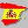
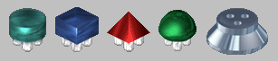

|
 |
 Versión española |
|
|
|
 Versión española |
This is our little homage to one of the most renowned games on all the golden 8-bit era; a game that showed how far the Ultimate genius could go with their Filmation technique. The development of this game got us more than four years, with long inaction periords interlaced with short intervals of frantic activity. Anyway, we expect you have as much fun playing the game as we've had making it :)
We've made this program on our free time, just for the fun of it and with no intention of earning any money at all, and the original copyright still belongs to Ultimate (now Rare). So, any commercial use of it is STRICTLY FORBIDDEN. Having said that, as long as we are involved, you are free to distribute this game on any form you like, as long as there's no money involved, as long as this documentaton goes with it, and keeping clear we are not the original copyright holders and have no relationship whatsoever with them.
And one more thing: in the remote case that this program or it’s use causes any kind of damage, we will not accept any respnsability; you will be on your own.
Summarizing, your mission on this game is to activate all cryochambers scattered arround the spaceship. Those cryochambers hold all the ship's cyogenized crew, and you must activate all of them before the ship reaches it's destination, so you can wake up the crew before it's too late...
To activate each cryochamber, you must find the right thermolec valve and drop it over the room's energy cell. There are four different kinds of thermolec valves; an hologram over each energy cell will tell you the right kind of valve you need for each one. All four kinds of valves and the energy cell do look like this:

To control your robot, you can use a joystick, or the following keys: You can redefine the keyboard too, and keep in mind you can graduate the jump's height and length, depending on how much time do you keep the key pressed.
We would like to praise the following people:
This game was made by D-o-S (David Olias Suárez, graphics and music) and Ignacio Pérez Gil (coding and sound effects). To get in touch with us, you can email us at alien8remake[]gmail.com Every time you finish a game, if you have at least one cryochamber activated, you can upload your score to Alien 8's online hiscore table, at Retrospec's web. The game itself will upload it for you if you want. Whatever you choose, your scores will be saved to a file called "scores.txt", so, if you decide you don't want the game to upload it, you can allways do it by yourself by copying the code you will find on this file and pasting it at Retrospec's main page. If you want to take a look at the scores uploaded right now , just click here.
Move:
Cursors.
Jump:
Z.
Get/drop:
X.
Jump & get/drop:
C.
5-Credits: